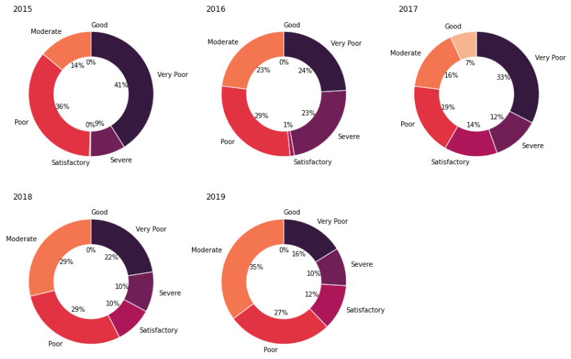
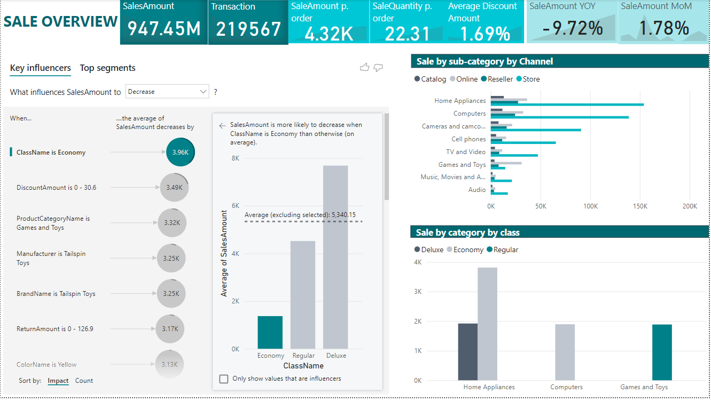
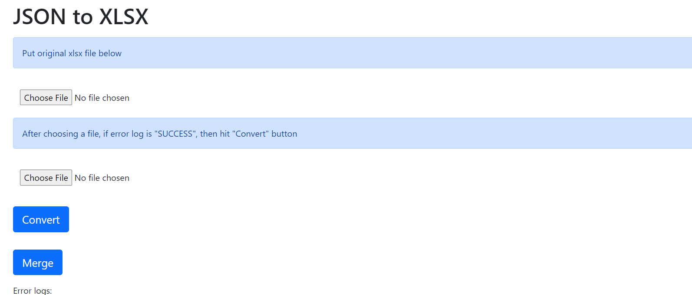

About me
Currently in my fourth year of studying ICT & Business at Fontys Hogeschool, I actively seek opportunities to expand my knowledge and gain practical experience by immersing myself in real-world business and data challenges. With this mindset, I concurrently work as a part-time Data Analyst at Bosch Security Systems and as a freelance Business Analyst at Smatyx—a promising startup in the R&D phase, focused on developing a web app ERP for the F&B industry in Vietnam.
As graduation approaches, I eagerly anticipate embarking on a new journey. I am currently seeking an internship opportunity in the field of Data Analytics and Data Science. With a solid foundation in my studies and a genuine passion for leveraging data to drive insights and innovation, I am excited to apply my skills and contribute to real-world projects in a professional setting. I am eager to join a dynamic team where I can further enhance my knowledge and gain practical experience.

The objective of the project is to create a solution for processing, storing, and analyzing machine log data within an Azure environment.
The project aims to forecast the stock replenishment requirements for the pharmacy, taking into account the specific characteristics of the pharmacy industry.

It is necessary to monitor the quality of air to protect people from respiratory disease. The goal of this challenge is to analyze the problem and predict the air quality from the data collected which includes pollutant substances indexes like SO2, CO2, etc and metrological factors like temperature, pressure, and relative humidity.

The objective of this project is to develop a sales analytics tool for analyzing sales performance. To systematically analyze sales and the influencing factors, I employed a logic tree, which is a framework for critical thinking. Various aspects such as segmentation, process structure, algebraic structures, and more have been considered within this approach. The resulting dashboard is constructed based on this well-defined approach.

The log data for various product groups and serial numbers is stored in a file share folder. Although the log file is intended to be in JSON format, the data extraction process has been flawed, resulting in a broken JSON structure. The objective of the task is to collect more than 200 files from the file share, rectify the format using regular expressions (regex), categorize them by product group, and perform statistical calculations on the respective machines.

The assignment is to build a prototype of a website for selling arts and provide all informations of a city's art and activities in order to attract visitor.